用 Excel 製作攻略用地圖
你可能不知道，網路上許多遊戲的攻略，裡面迷宮的格子地圖，居然可用 Excel 試算表來製作吧？
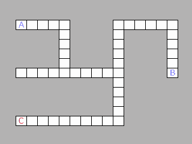
LibreOffice Calc
本文示範如何用試算表來製作這樣的格子地圖，不過礙於手上沒有 Microsoft Office，因此安裝免費的辦公室軟體 LibreOffice，改用 Calc 來製作，操作方式大同小異。
Step 1:
啟動 LibreOffice，建立新的 Calc 試算表。
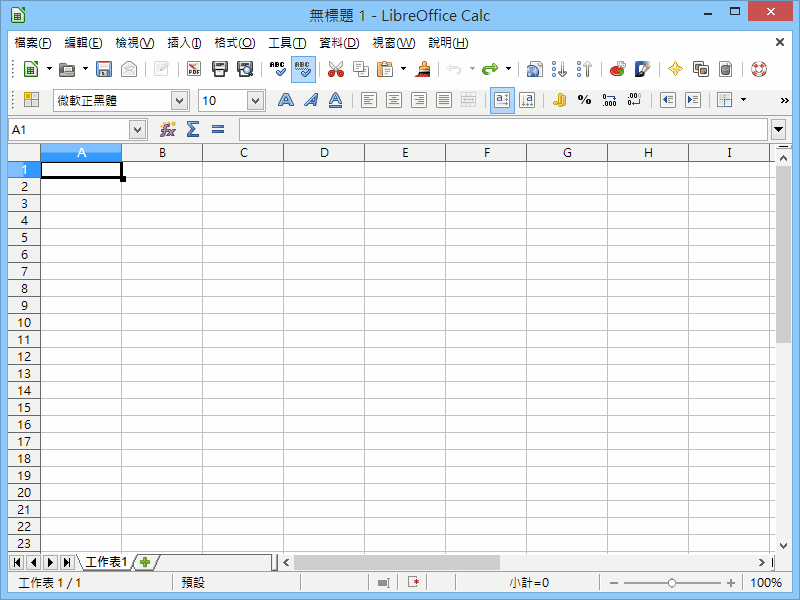
Step 2:
首先來製作格子！請按 Ctrl+A 全選儲存格，然後點選功能表的「格式」→「欄」→「寬度」。
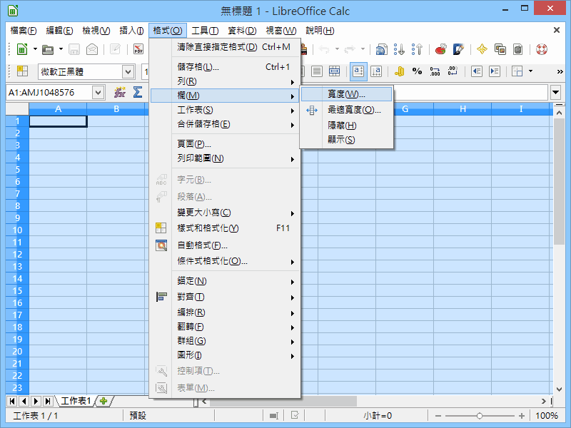
Step 3:
將「寬度」調整為 0.50 公分。
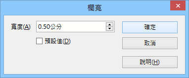
Step 4:
這樣就有格子可用來布置迷宮了！
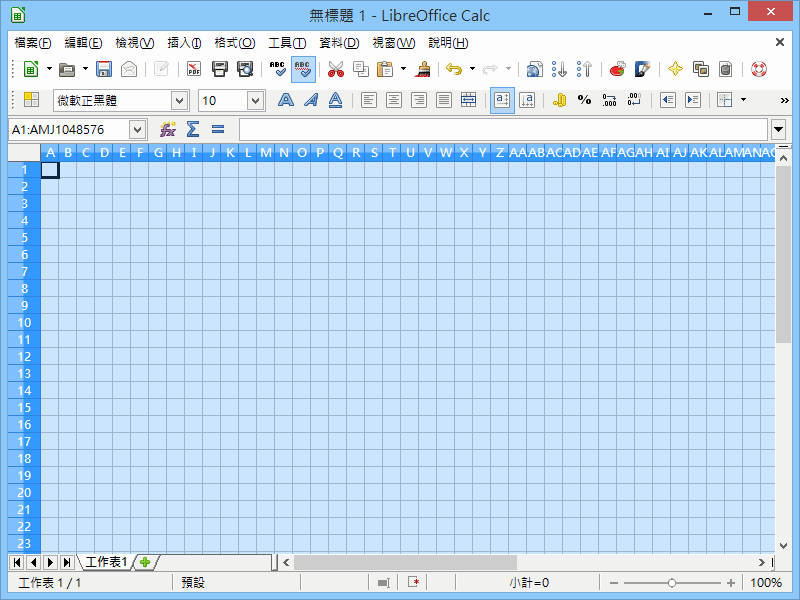
Step 5:
接著設定背景顏色，同樣全選所有儲存格，然後點「滑鼠右鍵選單」→「格式化儲存格」。
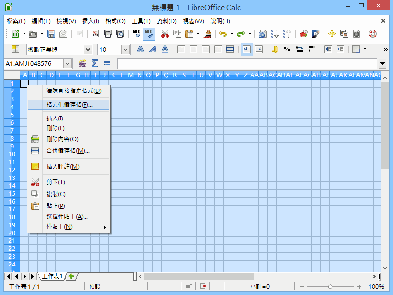
Step 6:
將背景設定為「灰色4」。
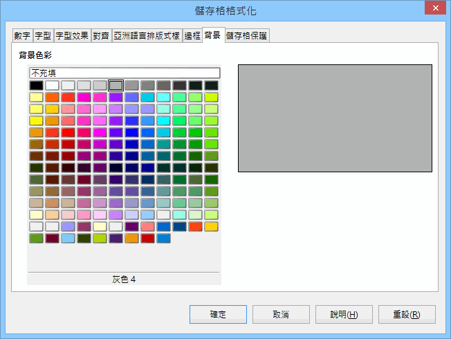
Step 7:
如此便成為一張尚未設計的空白地圖。
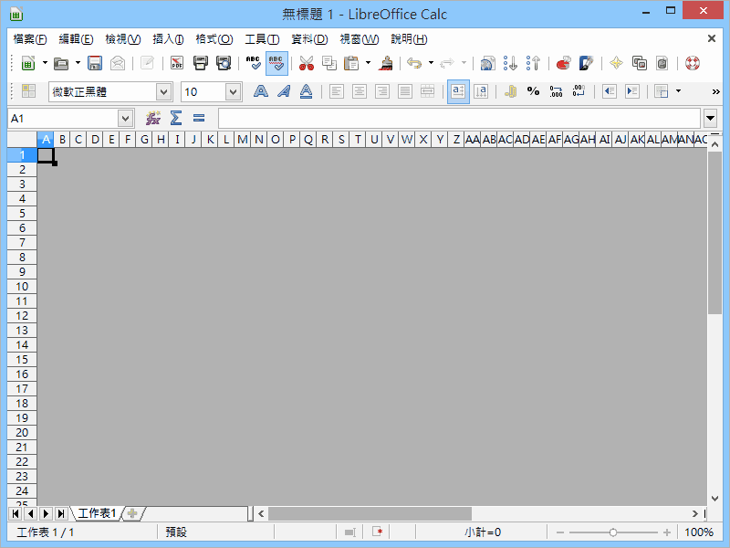
Step 8:
接著開始製作空白格子，找一個儲存格做為迷宮的起點，然後點「滑鼠右鍵選單」→「格式化儲存格」。
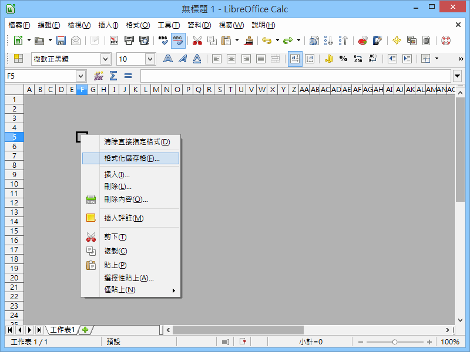
Step 9:
設定「邊框」的「線條」與「顏色」。
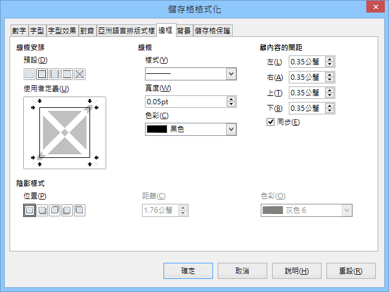
Step 10:
並且將「背景」設為「白色」。
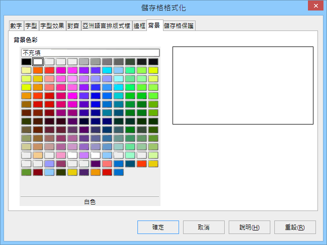
Step 11:
這樣就產生一個空白格子了！
Step 12:
按 Ctrl+C 複製這個空白格子，然後反覆按 Ctrl+V 來貼上，就能一步步製作迷宮地圖。
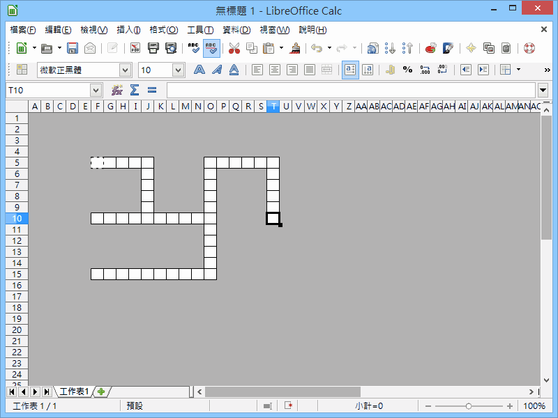
Step 13:
最後，在特殊地點的格子標示代號，便完成一張攻略用的迷宮附圖！
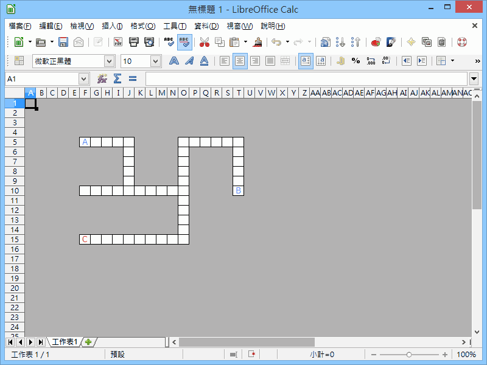